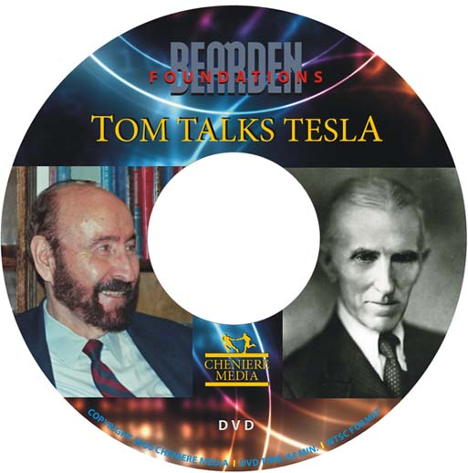
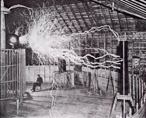
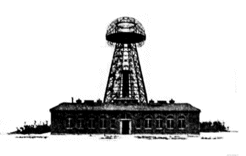

Online Store
Free Worldwide Shipping on DVDs
|
Free Worldwide Shipping on DVDs |
Tom Talks Tesla
|
|

 What did Tesla learn during his 1899 high-voltage high-frequency experiments with his so-called "magnifying transmitter" at Colorado Springs high in the Rocky Mountains? Why did he rush back to Long Island to build what conventional historians considered a boondoggle, Wardenclyffe, for which he received then-princely funding of USD 150,000 from legendary investor J. Pierpont Morgan? Was Wardenclyffe really a prototype wireless power transmission facility, a communication system, or was it something more? What secret project did Tesla intend to pursue concurrently, using the same equipment? Tom thinks he knows the answers to these and other Tesla mysteries.The tape also contains a bombshell where Tom speculates about the likely cause of the famous 1908 Tunguska event in Siberia in which an explosion from an unknown source leveled an estimated 60 million trees over 2,150 square kilometers, felling them radially outward from the blast center.  You will discover answers to these and other questions in "Tom Talks Tesla"! The video has been professionally edited and digitally remastered for playback on today's systems. The pure lecture format (no slides) showcases Tom Bearden's extraordinary gift for extemporaneous verbal presentation. He covers so much ground that you will want to play it again and again. |
|
|||||||
|
Tom Talks Tesla A magnificent exposition of Tesla's transmission of hidden energy without loss, its peaceful uses, its weaponization potential, and implications for today. Recorded in the 1990s, the information in this video is still fresh and relevant, valuable to both the serious researcher and the Tesla aficionado, and represents Tom Bearden's current thinking on these topics. 84 min. - DVD video |
|
|
||||||
|
Check Out |
||||||||
Technical note on DVDs | Refund Policy | Privacy Policy | FAQ | Questions